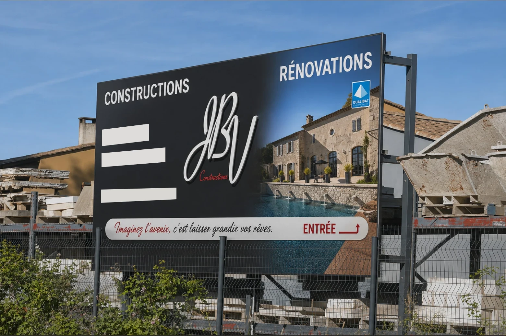
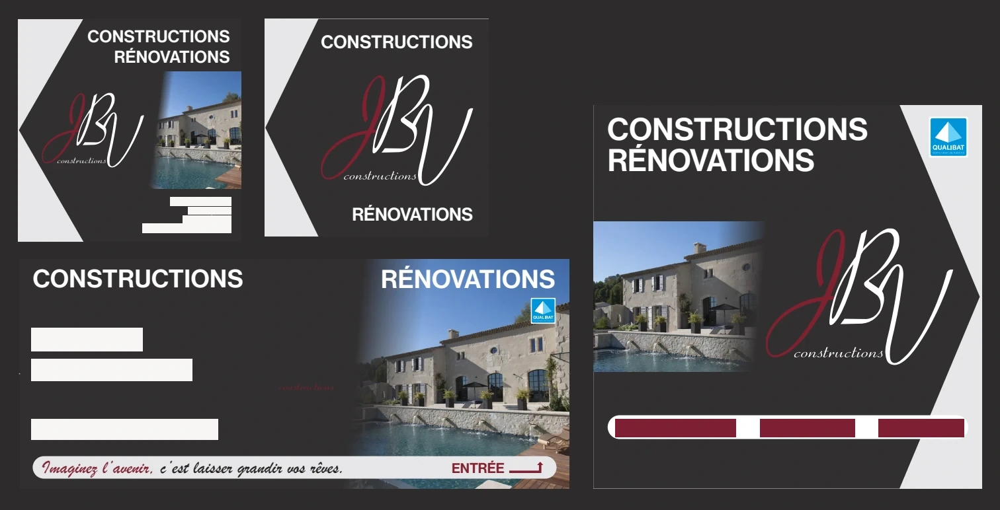

JBV Construction
Nouveau design de la signalétique pour JBV Construction.

Production de quatre affiches pour la signalétique et l’affichage autour du dépôt de JBV Construction. Les informations sont pensées pour être lisibles rapidement depuis la route.
